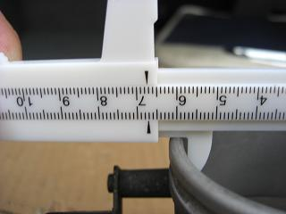
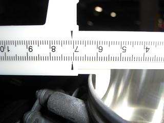
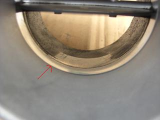
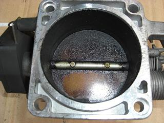
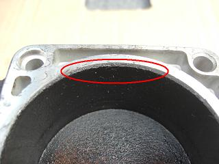
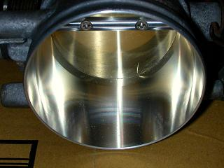
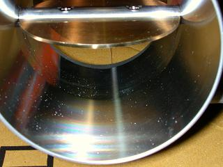
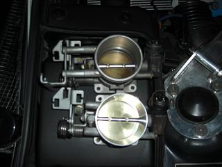

  加工前の内径 加工後の内径 67mmぐらい。 70.5mmぐらい。 3.5mmの拡大です。 だいたいどの車種も2~4mmが拡大の目安のようだ。
|
 気になっていた段差 汚れで変わるくらいなら、この段差も相当なロスになっているはず。
|
 これは、元々Ｍゴロー号についていた物。。 さすがに裏側まではきちんと掃除できなかった。17年間の汚れ＾＾；
|
|
 内径を広げることによって、インマニとスロットルの接合に段差ができては意味が無い。。 なので、インマニ側へテーパーをつけて加工してもらおうとしたが、機械の特性上不可能だった。 そこで、この赤丸部分がポイントとなる。 スロットルの内径は、インマニの接合部分より径が小さいのだ。 つまり、このぶんだけ拡大できるということ＾＾ |
  出来上がってきたスロットル 内径の拡大によって、スロットルを塞いでいるバタフライも径の大きいものに作り変える必要がある。 見るからに滑らかに空気が流れそう＾＾
|
 上がノーマル 下が拡大した物 一般的に、スロットルを大きくすると燃費が悪くなるらしい。 しかし、Mゴローの場合はOBCの燃費計で＋0.2km（約50km走行後）となった。 特に意識して運転はしていない。 実際、交換した後は途中、踏んで吹田へ向った（笑 他に「未燃焼のガスが放出される」などの情報があったが、 車検で排気ガスを測定してみると、HC値が0.05 CO値が0で問題無しであった。 これらは、きっとO2センサーが生きていれば補正されるのだろう。 交換したインプレッションとしては、アクセルのレスポンスが交換前とはまったく違う！ 更に、3000回転から上がとても美味しい（笑 レッドゾーンまでぐんぐん伸びていく。 ATからMTに載せ変えた時のような衝撃だった。 2009/3/20 追記 加工してもらった所は、TRY・BOXさん。 今回は、無理を言って加工してもらった。 BMWも国産車のスロットルと基本的な構造は変わらない。 その為、だいたいの車種は加工が可能なようだ。気になる方は相談してみると良いかも＾＾ |